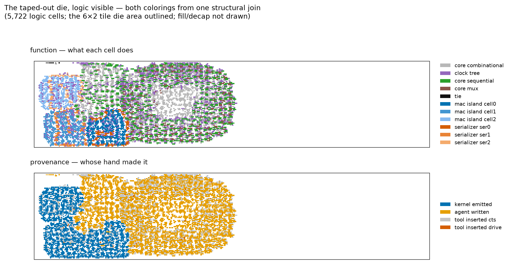

AI agents produced implementations, specifications and proofs machine-checked by the Lean 4 kernel across a verified compiler, executive, and RISC-V silicon flow.
Abstract
For sixty years, machine verification has been a major cost overhead, affordable only for exceptional artifacts. Here we report that generative AI inverts this relationship: at AI speed, machine verification is not only economical but essential to productivity — it is the incorruptible referee that lets one person safely direct autonomous machine work at scale. In five weeks, one researcher on consumer AI subscriptions directed a small fleet of AI agents from application code, through a verified compiler and executive, to a RISC-V processor taped out on a community silicon shuttle; no proof passed through human review, and no RTL was written by a human. The working discipline — the Salt method — rests on a proof kernel no hallucinated proof can pass: mathematical claims travel between agents as kernel-checked artifacts, and human attention is reserved for statements, designs, and rulings. Verification is stated link by link, from the Lean 4 kernel to SAT-checked equivalence at the silicon boundary. We publish the complete accounting: theorem provenance, a pre-registered token meter, floor-bounded human time, and an error ledger whose catch numbering runs to #256 — a monotone counter over the mathematics campaign's append-only flags ledger, maintained 2026-07-07 to 2026-07-20 (one number, #79, was never assigned; later catches are recorded un-numbered) — against zero incorrect proofs reaching the record.
Problem
Machine verification has historically been a costly overhead affordable only for exceptional artifacts, and generative AI produces candidate proofs and designs cheaply but does not by itself make them trustworthy.
Approach
The Salt method has one researcher direct a fleet of AI agents that each return an implementation, a formal specification, a machine-checked proof, adversarial tests, and simplified certificates. Mathematical claims travel between agents only as Lean 4 kernel-checked artifacts, with human attention reserved for statements, designs, and rulings. Verification is stated link by link from the Lean 4 kernel to SAT-checked equivalence at the silicon boundary.
Results
In five weeks one person directed agents from application code through a verified compiler and executive to a RISC-V processor submitted to a community silicon shuttle, with no human-written RTL and no proof passing human review. The campaign recorded 2,087 commits in 37 days and zero incorrect proofs reaching the record.

Figure 4: Figure 4 | The submitted geometry, logic visible. The shipped design (Tiny Tapeout shuttle run 32284710003, shuttle-repository commit 7d2b275), rendered as its placed logic — two colorings. Its measured sizes, each with its basis: 7,779 standard cells at synthesis (the committed synthesis stat — a synthesis count, not a placed-cell census); 14,636 placed standard cells among 43,884 insta